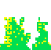
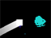
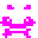
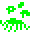

"TO PRESERVE THE ORBITAL HARMONY OF OUR SYSTEM, THE DEFENSE OF BOTH PLANETS IS OUR HIGHEST PRIORITY"
Use your planetary shield to deflect the enemy's attacks. When projectiles escape past your shield, your planet's health will decrease, eventually leading to the destruction of your cities. If either planet is destroyed, both planets will be knocked out of orbit and into oblivion. Planetary health can be determined from the condition of the cities along the edge of the screen:
YOUR PLANET IS HEALTHY
YOUR PLANET HAS TAKEN MODERATE DAMAGE

YOUR PLANET HAS TAKEN SIGNIFICANT DAMAGE
YOUR PLANET HAS TAKEN CRITICAL DAMAGE
Prior to destruction, your planet will flash to indicate that it can only sustain one further hit. Your citizens will rebuild the planet, but only while they are protected from attack.
To defeat the aliens, you must collaborate with the defender of your allied planet. As a team, you can increase the potency of your attacks via these strategies:
SUPERCHARGED PROJECTILES
By volleying a projectile between the two shields, you can create a super-charged projectile. This will cut through large swaths of enemy forces.

TIME WARP
The last alien will emit a time-disrupting energy field. Our research indicates that this field is the alien's distress beacon, however it can be used to carefully direct projectiles towards the alien. Tilt the iPad to control the projectiles during a time warp.
SUPER SHEILD
The cyan lifecapsule dropped from a dying alien you can extend your shield. However, in order to preserve the gravitational balance between planets, the other planet's shield will be reduced.
MULTI PROJECTILE
With the power of a magenta lifecapsule, each projectile that you reflect will spawn an additional projectile. With this capability, you will be able to do more damage to the enemy. However, be careful since those projectiles can also damage the planets.
SAFETY SHEILD
Juiced by a red lifecapsure, your shield will destroy projectiles on contact rather than reflect them. This will reduce the number of threatening projectiles, however it will also limit your ability to attack.
AUTOFIRE
After absorbing a green lifecapsule, your shield will begin to fire super-charged projectiles automatically. While this capability will deliver significant damage to the enemy, it can also quickly destroy the other planet. Be sure your ally is ready!
Aliens reproduce via cloning. Entire alien populations can be comprised of a single genetic individual. Though these aliens share the same DNA, they appear to have separate personalities. Some are equipped with armor which can absorb a single reflected projectile. The following is a list of the alien personas we have so far discovered:
ENSIGN PRANCE
The junior officer in the alien ranks, ENS Prance is capable of firing a single projectile. ENS Prance seems relatively docile, almost curious, excepting the deadly projectiles it emits. Our research team has recovered one relatively undamaged projectile, which they claim is a large communication device. However we all know that these are actually weapons of mass destruction.
 LIEUTENANT WADDLE
LT Waddle seems just as friendly as the other aliens, but emits several potentially dangerous projectiles when killed. These projectiles are just as dangerous to other aliens as they are to your planet. Care should be taken when attacking this little dude.
 COMMANDER BOBBLE
CDR Bobble is much more aggressive than its comrades. It is capable of firing several projectiles at a time. Facing CDR Bobble is anything but a casual table-tennis match – dispense with this alien as quickly as possible.
Unconfirmed reports suggest that there may be a limited number of larger aliens. Our scanners have picked up anomalies that suggest these aliens are twice the size of the more common varieties. Be on the lookout, and report any sightings immediately.
CREDITS
This game was designed and implemented by Cole Krumbholz and Jon Beilin, collectively Koduco Games. All artwork by Anna Anthropy. All music by Nullsleep. PongVaders uses the Cocos2D game engine and the Box2D physics engine. PVaders font copyright by Koduco Inc, 2010.
FEEDBACK
I LOVE THIS GAME!
SOMETHING'S WRONG